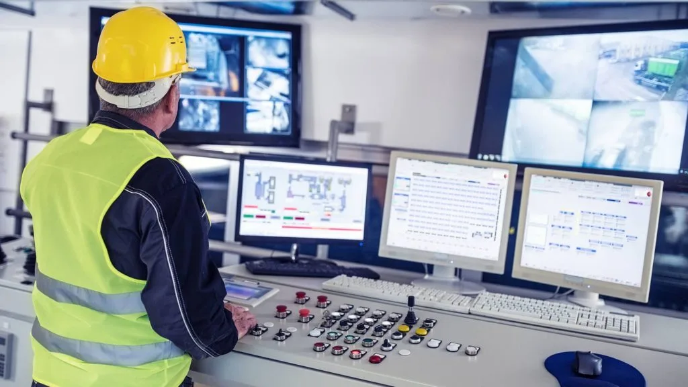

        <div class="page_header">
            <h2 class="page_title">Основные сведения</h2>
        </div>
        <div class="container">
            <div class="page_content">
                   <!-- HTML-разметка с изображением -->
<div id="image-container">
    
  </div>
            </div>

        </div>
<script> 
// Получение ссылок на элементы
var imageContainer = document.getElementById('image-container');
var image = imageContainer.querySelector('img');

// Инициализация переменных
var posX = 0, posY = 0, scale = 1, lastPosX = 0, lastPosY = 0, lastScale = 1;
var maxScale = 4, minScale = 1;
var isDragging = false;

// Обработка событий касания
imageContainer.addEventListener('touchstart', function(e) {
  // Сохранение текущих значений перед началом касания
  lastScale = scale;
  lastPosX = e.touches[0].clientX - posX;
  lastPosY = e.touches[0].clientY - posY;
  isDragging = true;
});

imageContainer.addEventListener('touchmove', function(e) {
  if (isDragging) {
    // Изменение масштаба
    scale = Math.max(minScale, Math.min(lastScale * e.touches[0].scale, maxScale));

    // Изменение позиции
    posX = e.touches[0].clientX - lastPosX;
    posY = e.touches[0].clientY - lastPosY;

    // Обновление размеров и положения изображения
    image.style.width = image.offsetWidth * scale + 'px';
    image.style.height = image.offsetHeight * scale + 'px';
    image.style.transform = 'translate(' + posX + 'px, ' + posY + 'px)';
  }
});

imageContainer.addEventListener('touchend', function(e) {
  // Сохранение текущих значений после окончания касания
  lastScale = scale;
  isDragging = false;
});

imageContainer.addEventListener('touchcancel', function(e) {
  // Сохранение текущих значений после окончания касания
  lastScale = scale;
  isDragging = false;
});
</script>
      